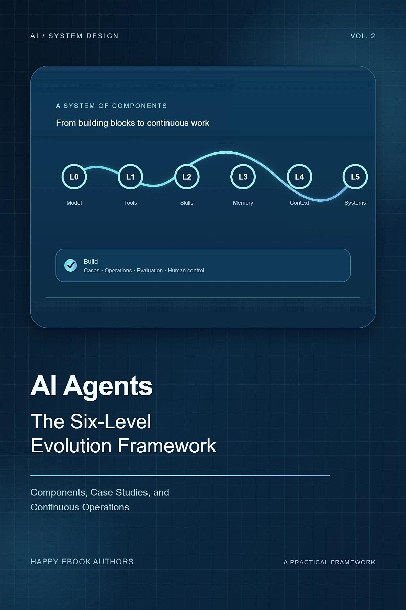

AI Agents: The Six-Level Evolution Framework
Volume 2: Components, Case Studies, and Continuous Operations

AI Agents: The Six-Level Evolution Framework
Volume 2: Components, Case Studies, and Continuous Operations
AI-agent capability does not come from a model alone. Reliable work emerges when models, tools, Skills, Memory, Context, APIs, MCP, scheduling, monitoring, and human approval are composed with clear boundaries. Volume 2 develops the practical L0-L5 model through components and case studies: Model, Tool, Skill, Memory, Context, APIs, MCP, scheduling, background work, monitoring, evaluation, and multi-Agent teams. The book covers meeting notes, personal documents, weekly reports, code debugging, data monitoring, multi-Agent collaboration, evaluation metrics, staged adoption, verification, read-back, rollback, and safe stopping. It distinguishes a design example from a verified result and preserves evidence, versions, errors, human corrections, and approval records. Designed for technical leads, developers, analysts, product owners, educators, and professionals moving from isolated Agent experiments to observable, recoverable, and accountable work systems.
作品介紹；目前未提供購買或試閱入口